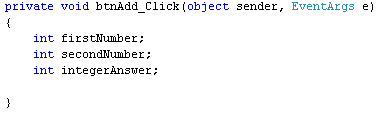
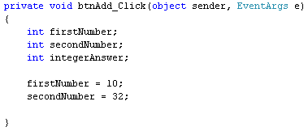
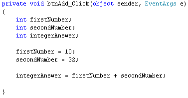
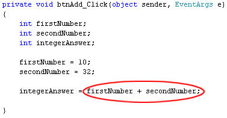
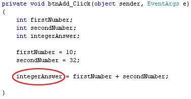
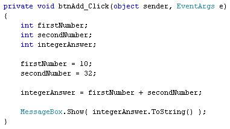
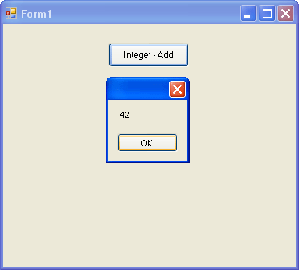

Addition in C# .NET
We'll now use variables to do some adding up. After you have learned how to add up with the three number variable types, we can move on to subtraction, multiplication, and division.
Start a new project for this. So click File > Close Solution from the menu bar at the top of Visual C#. Then click File > New Project. Type arithmetic as the Name of your new Windows Forms Application project.Click OK to create the new project.
Add a button to your new form, and set the following properties for it in the Properties Window:
Name: btnAdd
Size: 100, 30
Text: Integer - Add
Move the button to the top of your form. Then double click it to get at the coding window. Set up the following three integer variables in your button code:
int firstNumber;
int secondNumber;
int integerAnswer;
Your coding window should look like ours below:

We now need to put something into these variables. We'll store 10 in the first number, and 32 in the second number. So add these two lines to your code:
firstNumber = 10;
secondNumber = 32;
Your coding window will then look like this:

So the numbers we want to store in the variables go on the right hand side of the equals sign; the variable names go on the left hand side of the equals sign. This assigns the numbers to the variables - puts them into storage.
We now want to add the first number to the second number. The result will be stored in the variable we've called integerAnswer. Fortunately, C# uses the plus symbol (+) to add up. So it's fairly simple. Add this line to your code:
integerAnswer = firstNumber + secondNumber;
And here's the coding window:

We've already stored the number 10 in the variable called firstNumber. We've stored 32 in the variable secondNumber. So we can use the variable names to add up. The two variables are separated by the plus symbol. This is enough to tell C# to add up the values in the two variables. The result of the addition then gets stored to the left of the equals sign, in the variable called integerAnswer. Think of it like this:

Calculate this sum first

Store the answer here
To see if all this works or not, add a message box as the final line of code:
MessageBox.Show( integerAnswer.ToString( ) );
We're just placing the integerAnswer variable between the round brackets of Show( ). Because it's a number, we've had to use ToString( ) to convert the number to text. Here's what your coding window should look like now:

And here's the form when the button is clicked:

You don't have to store numbers in variables, if you want to calculate things. You can just add up the numbers themselves. Like this:
integerAnswer = 10 + 32;
And even this:
integerAnswer = firstNumber + 32;
So you can add up just using numbers, or you can mix variable names with numbers. As long as C# knows that there's a number in your variable, and that it's the right type, the addition will work.
You can use more than two variables, or more than two numbers. So you can do this:
integerAnswer = firstNumber + secondNumber + thirdNumber;
or this:
integerAnswer = firstNumber + secondNumber + 32;
And this:
integerAnswer = firstNumber + 10 + 32;
The results is the same: C# adds up whatever you have on the right hand side of the equals sign, and then stores the answer on the left hand side.
In the next part, you'll see how to add up with float variables.